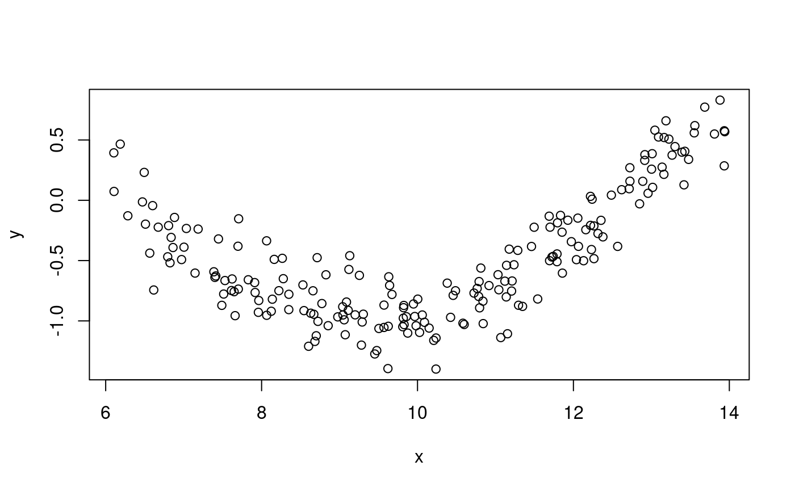

Usually, one creates a GOF-model-test-class via the function GOF_model(). But this function is actually a wrapper for the class GOF_model_test. That class needs other classes to work properly. In particular it uses the three interfaces GOF_model_info_extractor, GOF_model_simulator, GOF_model_trainer. In general, objects of class lm or glm can be used with GOF_model. However, there might be situations where one has to overwrite the default behavior. For instance, if you want to apply the methodology to new models or simply because a model fit returned by an R-package does not work properly with the GOF-package. Here we show how to implement the three interfaces for some concret cases.
Assume we have such a model
\[ Y = m(\beta^\top X) + \epsilon \]
without any knowledge about \(\epsilon\). Then we could try to estimate the \(\beta\) using a least square estimate and using the GOF-package for check our fitted model. First we generate a data set
library(GOF) set.seed(1) X = runif(n = 200, min = 6, max = 14) d = data.frame(x = X, y = sin(0.5 * X) + rnorm(200, sd = 0.2)) plot(y~x, data = d)

Lets have a short excursion at this point because the plot gives the impression that the following simple model might apply:
However, a goodness-of-fit-test rejects this model
mt <- GOF_model( data = d, model = wrong_model, simulator_type = "parametric", nmb_boot_samples = 100, y_name = "y", Rn1_statistic = Rn1_KS$new()) mt$get_pvalue() #> [1] 0
Note that in this simple case the standard diagnostic plots also reveal that this model is not a sufficient. Now we fit the model using a least square estimator:
fit <- minpack.lm::nlsLM(y ~ sin(a * x), data = d, start = c(a = 0.5), control = nls.control(maxiter = 500)) fit #> Nonlinear regression model #> model: y ~ sin(a * x) #> data: d #> a #> 0.4993 #> residual sum-of-squares: 7.873 #> #> Number of iterations to convergence: 3 #> Achieved convergence tolerance: 1.49e-08
In order to create a goodnes-of-fit-test using GOF_model_test we have to implement three interfaces. The first interface requires that we implement three functions yhat, y_minus_yhat and beta_x_covariates, which are the predictions for the dependent variable (also called target-variable), the residuals on the scale of the dependent variable and the inner product of the estimated parameters and the independent variables (also called covariates or features). However, the object returned by minpack.lm::nlsLM does not contain the original data set but that data set is necessary to calculate the inner product. Hence, we make a list that contains the model fit and the data that was used to fit the model.
fit_and_data <- list(fit = fit, data = d)
Now we can implement the interface
my_nls_info_extractor <- R6::R6Class( classname = "my_nls_info_extractor", inherit = GOF_model_info_extractor, public = list( yhat = function(model) { predict(object = model$fit) }, y_minus_yhat = function(model) { residuals(object = model$fit) }, beta_x_covariates = function(model) { a_hat <- coef(object = model$fit) x <- model$data$x ret <- a_hat * x return(ret) } )) my_info_extractor <- my_nls_info_extractor$new()
Implementing yhat and y_minus_yhat is straight forward using the function already offered by R but beta_x_covariates needs special attention. The reason is that minpack.lm::nlsLM can also fit very general models of the type \(m(\beta, X)\). Hence, there is now built-in-function to extract objects like \(\beta^\top X\). Lets look at the first few data points:
head(d) #> x y #> 1 8.124069 -0.9199426 #> 2 8.976991 -0.9666172 #> 3 10.582827 -1.0191812 #> 4 13.265662 0.3741709 #> 5 7.613455 -0.7480823 #> 6 13.187117 0.6588717
Now we are able to predict \(y\):
head(my_info_extractor$yhat(model = fit_and_data)) #> [1] -0.7926252 -0.9737135 -0.8407826 0.3343611 -0.6132205 0.2971500
And calculate the difference between \(y\) and our prediction:
head(my_info_extractor$y_minus_yhat(model = fit_and_data)) #> [1] -0.127317499 0.007096259 -0.178398577 0.039809752 -0.134861797 #> [6] 0.361721696
And based on the estimated coefficient we can calculate the inner product with \(x\):
head(my_info_extractor$beta_x_covariates(model = fit_and_data)) #> [1] 4.056695 4.482596 5.284458 6.624113 3.801724 6.584892
Since we did not make an assumption about the distribution of \(\epsilon\) we cannot use a parametric resampling scheme. However, we can do a wild bootstrap that uses only the predictions and the residuals. The class GOF_sim_wild_rademacher implements this wild bootstrap but needs an info extractor to obtain the preditions and residuals:
my_simulator <- GOF_sim_wild_rademacher$new( gof_model_info_extractor = my_info_extractor )
This class generates as many observations (according to the fitted model) as are contained in the data set used to fit the model.
Again looking at first at the original data points:
head(d) #> x y #> 1 8.124069 -0.9199426 #> 2 8.976991 -0.9666172 #> 3 10.582827 -1.0191812 #> 4 13.265662 0.3741709 #> 5 7.613455 -0.7480823 #> 6 13.187117 0.6588717
Now lets look at new \(y\)s generated according to the fitted model, i.e. following a negative binomial distribution subject to the independent variables:
head(my_simulator$resample_y(model = fit_and_data)) #> [1] -0.6653077 -0.9808097 -1.0191812 0.3741709 -0.4783588 0.6588717
Note that the resampled \(y\)’s sometimes equal the observed \(y\). The reason is that the this wild bootstrap performs ‘predictions +/- residual’ and only the sign is drawn at random.
Finally, we need to implement the interface GOF_model_trainer which requires a function refit that is able to update the model object by refitting it to a new data set. R already provides the necessary function, i.e. stats::update. However we combined the fitted model with the data set in a list and we need to take into account:
my_nls_trainer <- R6::R6Class( classname = "GOF_nls_trainer", inherit = GOF_model_trainer, public = list( refit = function(model, data) { fit <- update(object = model$fit, data = data) ret <- list(fit = fit, data = data) return(ret) })) my_trainer <- my_nls_trainer$new()
This implementation basically equals the implementation of GOF_lm/glm/_trainer. The only difference is that we again store the data with the fit because nlsLM() doesn’t do it for us.
Of course, fitting the model again to the original data set results in the same fitted model. With the defined classes we can now easily generate a new data set and refit the model to that new data set.
new_data <- d new_data$y <- my_simulator$resample_y(model = fit_and_data) my_trainer$refit(model = fit_and_data, data = new_data)$fit #> Nonlinear regression model #> model: y ~ sin(a * x) #> data: data #> a #> 0.4997 #> residual sum-of-squares: 7.871 #> #> Number of iterations to convergence: 2 #> Achieved convergence tolerance: 1.49e-08
Now all ingredients are available for applying the Goodness-of-Fit test:
set.seed(1) mt <- GOF_model_test$new( model = fit_and_data, data = d, nmb_boot_samples = 100, y_name = "y", Rn1_statistic = Rn1_CvM$new(), gof_model_info_extractor = my_info_extractor, gof_model_resample = GOF_model_resample$new( gof_model_simulator = my_simulator, gof_model_trainer = my_trainer ) ) mt$get_pvalue() #> [1] 0.8
A negative binomial model is a generalized linear model. Furthermore, within R MASS::glm.nb returns an object of class glm and this package actually can process glm-classes. However, MASS::glm.nb seems to have a bug that prevents to propoerly update/refit such an object via the stats::update() function. We briefly illustrate this using an artificial data set:
library(MASS) set.seed(1) X1 <- rnorm(100) X2 <- rnorm(100) d <- data.frame( y = MASS::rnegbin(n = 100, mu = exp(0.2 + X1 * 0.2 + X2 * 0.6), theta = 2), x1 = X1, x2 = X2) fit <- MASS::glm.nb(y~x1+x2, data = d) fit #> #> Call: MASS::glm.nb(formula = y ~ x1 + x2, data = d, init.theta = 1.561918046, #> link = log) #> #> Coefficients: #> (Intercept) x1 x2 #> 0.1905 0.1532 0.7696 #> #> Degrees of Freedom: 99 Total (i.e. Null); 97 Residual #> Null Deviance: 144.3 #> Residual Deviance: 102.4 AIC: 317.5
Note that fit-object shows that the call contained the parameter init.theta which obviously was not provided by us. The problem is that this init.theta parameter is used by stats::update during refitting resampled data. So fitting resampled data and fitting the original data is slightly different from the perspective of the fitting algorithm. To circumvent this problem we can reimplement the corresponding interface as follows:
my_negbin_trainer <- R6::R6Class( classname = "GOF_glmnb_trainer", inherit = GOF_model_trainer, public = list( refit = function(model, data) { MASS::glm.nb(formula = formula(model), data = data) }))
This way we ensure that the original data set and resampled data set are fitted in the same way. Now we can create the GOF-test-class using this new refitting-class
set.seed(1) mt <- GOF_model_test$new( model = fit, data = d, nmb_boot_samples = 100, y_name = "y", Rn1_statistic = Rn1_CvM$new(), gof_model_info_extractor = GOF_glm_info_extractor$new(), gof_model_resample = GOF_model_resample$new( gof_model_simulator = GOF_glm_sim_param$new(), gof_model_trainer = my_negbin_trainer$new() ) ) mt$get_pvalue() #> [1] 0.36
Lets compare the result with the default GOF-test for glm’s
set.seed(1) mt2 <- GOF_model( model = fit, data = d, nmb_boot_samples = 100, simulator_type = "parametric", y_name = "y", Rn1_statistic = Rn1_CvM$new() ) #> Warning in GOF_model(model = fit, data = d, nmb_boot_samples = 100, #> simulator_type = "parametric", : The GOF-test requires to refit the model. #> Refitting MASS::glm.nb can be problematic, see vignette New-Models mt2$get_pvalue() #> [1] 0.36
In this case the p-values do not differ. However, it could be different in other settings.